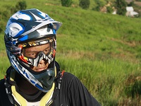
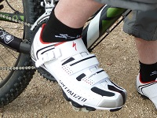
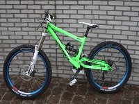
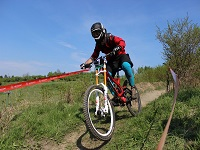

Downhill Mountain Bike Racing
Downhill cycling is a much more extreme sport than cross country and this is reflected in the equipment.
The bikes have extensive front and rear suspension to absorb the impacts associated with going downhill over rough ground very fast.
Downhill cyclists wear full motorbike style helmets and light body armour to protect them when they fall off. Falls are a fairly regular occurrence in downhill racing so it’s not for the faint hearted.



